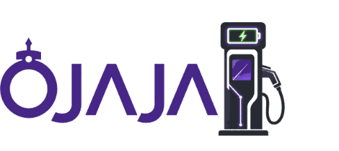

Section A
Consent and background Tick the options that apply. There are no right or wrong answers. Do not write your name unless you choose to leave a contact at the end.
Purpose: This questionnaire is to understand the real problems ride-hailing drivers face in Lagos, including fuel and scarcity, car maintenance, earnings and expenses, time wasted on the road, insecurity, and dealings with police, LASTMA, VIO and other security or traffic operatives.
Next: Time on the road
Section B
Time on the road Tell us how a normal working day is divided.
Back Next: Fuel & running costs
Section C
Fuel, scarcity and running the car We are looking at both normal fuel costs and what happens when supply is difficult.
16. How much do you typically spend on fuel per day?
22. Do passengers insist on air conditioning, and how much does that add to fuel use?
Back Next: Maintenance
Section D
Maintenance and other car costs Regular and major vehicle expenses.
24. Typical monthly spend on maintenance (oil, pads, tyres, minor repairs)
Back Next: Revenue
Section E
Revenue and take-home Approximate figures are fine.
29. After fuel, commission and small daily costs, what do you usually take home on a good day?
Back Next: Safety
Section F
Insecurity These questions help identify practical safety measures for drivers.
35. Areas you avoid, especially at night
Back Next: Officials
Section G
Police, LASTMA, VIO and other officials Tell us what official stops cost in time and money.
40. In a typical week, how much do you spend on unofficial settlements, tips or levies to officials?
Back Next: Priorities & pilot
Section H
Ranking problems and what would help Final section. Rank your biggest problems and tell us what would make the work better.
44. Rank the problems that hurt your work most.
Write 1 next to the worst, then 2, 3, 4, 5. You can leave the rest blank. Each rank should be used only once.
Fuel price — 1 2 3 4 5
Fuel scarcity / queues — 1 2 3 4 5
Vehicle maintenance — 1 2 3 4 5
Platform commission / low fares — 1 2 3 4 5
Traffic / time on the road — 1 2 3 4 5
Insecurity / crime — 1 2 3 4 5
Police / LASTMA / official harassment — 1 2 3 4 5
Fatigue / long hours — 1 2 3 4 5
Accidents / bad roads — 1 2 3 4 5
Other — 1 2 3 4 5
Lower running-cost pilot The survey also asks about interest in EV or CNG options, an in-app wallet and stronger safety tools.

47. What is the one change that would help you most in the next 6 months?
48. Anything else we should know?
Thank you. Your answers will be used only to understand driver conditions in Lagos and to design fairer, safer operations.
Back Submit survey